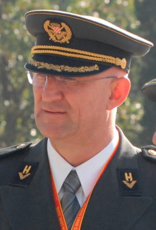

ČETVRTA GRANA PRVE OBITELJI TANDARA
4.0. Mate Tandara – Ivanov (rođen c.★ 1740. – )
Mate Tandara je bio četvrti sin Ivana Tandare. Mate i supruga Filipa Kopač imali su petero djece: sina Ivana, te kćeri Matiju, Mandu, Jaku i Ceciliju. Muška loza nastavila se isključivo preko sina Ivana. Ivan se ženio dva puta. U prvom braku s Pavom Sičenica dobio je sina Antu, jedinog muškog nasljednika Matine loze. U drugom braku s Jelom Parlov dobio je kćer Ružu. Ova je grana poznata u narodu po nadimku Cesarovići.
O podrijetlu toga nadimka među živućim pripadnicima ove rodoslovne grane plemena Tandara sačuvala se zanimljiva predaja. Prema njoj, neki su Matini potomci radili poljoprivredne poslove kod obitelji iz roda Lažeta. Kada su ih ukućani i susjedi upitali: „Kakva vam je hrana bila u Lažeta?”, odgovorili su: „Ko' u cesara!”
Je li pritom izgovorena riječ cesar ili sesar, ni danas nije posve razjašnjeno. Iako se oba oblika mogu pronaći na starijim nadgrobnim spomenicima i u predaji, danas se većina potomaka ove grane obitelji naziva Cesarovićima.
4.1. Ivan Matin ( - 1870.)
Ivan Matin ženio se dvaput. Prvi put se oženio 1817. godine Pavom Sičenica i s njom imao sina Antu. U drugom braku s Jelom Parlov dobio je kćer Ružu (1849.- ).
4.1.1. Ante Ivanov (1832.- )
Ante se 1853. vjenčao s Jozom Pušić. Imali su sinove Ivana, Juru (1858.- ), Marka (1865.- ) i Matu, te kćeri Ivu (1862.- ), Tomicu (1867.-1869.), Maru (1870.- ) i Jelu (1877.- ). Za Juru i Marka nema drugih zapisa osim onih o njihovu rođenju. Ili su umrli mladi ili su se nekamo odselili.
4.1.1.1. Ivan Antin (1855.- 1928.)
Oženio se Ružom Matišić i s njom imao sinove Marijana (1888.- ), Jozu i Ivana, te kćeri Anicu (1893.-1920.), Ivu (1895.- ) i Jelu (1899.- ). Za Marijana ne postoje drugi zapisi osim onoga o njegovu rođenju. Ili je umro mlad ili se nekamo odselio.
4.1.1.1.1. Jozo Ivanov (1890.- 1947.)
Jozo, drugi Ivanov sin, uzeo je za ženu Ivu Bilić. Imali su sinove Marijana i Mirka (1932.-1936.) (koji je umro kao malo dijete), te kćeri Jozu (1922.- ) i Anu (1926.- ).
4.1.1.1.1.1. Marijan Jozin (1929.- 1977.)
Marijan Jozin oženio se Matijom Mršić i s njom dobio sina Josipa, te kćeri Nadu (1953.- ), Danicu (1954.- ), Branku (1958.- ), Anu (1960.- ), Dragicu (1964.- ) i Mirjanu (1975.- ). Josip je uzeo za ženu Dragicu Pavić. Imaju sinove Marijana, Antu i Kristijana, te kćer Silviju.
4.1.1.1.1.1.1. Josip Marijanov (1962.- )
Josip je oženio Dragicu Pavić s kojom je dobio sinove Marijana (1991.- ), Antu 1996.- ) i Kristijana (1998.- ), te kćer Silviju (1994.- ). Obitelj živi u Ričicama.
4.1.1.1.2. Ivan Ivanov (1903.- 1965.)
Ženio se dvaput. Prvi put oženio se Jakom Tavra i s njom dobio sinove Franu i Stanka (1938.-1952.), koji je umro u dobi od četrnaest godina. U drugom braku s Anom Capia nije imao djece.
4.1.1.1.2.1. Frane Ivanov (1933.- )
Frane Ivanov uzeo je za ženu Tomicu Pavić i s njom dobio sinove Stanka, Cvjetka (1957.- ), Miroslava (1959.-1959.) (koji je umro kao malo dijete) i Dragomira (1963.- ), te kćeri Mariju (1953.- ), Rozu (1955.- ), Miroslavu (1960.- ) i Anitu (1971.- ). Stanko je u braku s Ankicom Kovačević. Imaju kćeri Tatjanu i Tamaru. Žive u Zagrebu. Cvjetko i Dragomir nisu se ženili. Žive u Klokočevcu kod Bjelovara.
4.1.1.1.2.1.1. Stanko Franin (1956.- )
Stanko je oženio Ankicu Kovačević s kojom je dobio kćeri Tatjanu (1981.- ) i Tamaru (1983.- ). Obitelj živi u Zagrebu.
4.1.1.2. Mate Antin (1873.- 1927.)
Oženio se Ružom Manenica. Imali su sinove Antu (1901.-1901.), Josipa (1905.- ), Cvitana, Antu (1908.- ) i Nikolu te kćeri Tomicu (1902.- ) i Maru (1910.- ). Za Josipa nisam našao drugih zapisa osim onoga o njegovu rođenju. Ili je umro mlad ili se nekamo odselio.
4.1.1.2.1. Cvitan Matin (1908.-1981.)
Cvitan, treći Matin sin, uzeo je za ženu Tomicu Pavić. Imali su sinove Matu (1932.-1933.) (koji je umro kao malo dijete) i Nikolu (1938.- ), te kćeri Luciju (1930.- ), Anu (1934.-1935.), Ružu (1936.- ), Stanu (1940.- ), Nevenku (1945.- ) i Branku (1947.- ). Za Nikolu nema drugih zapisa osim onoga o njegovu rođenju. Ili je umro mlad ili se nekamo odselio. Cvitanova loza je izumrla.
4.1.1.2.2. Ante Matin (1908.- )
Oženio se Anom Pavić. Dobili su sinove Marijana, Dinka (1937.-1939.; koji je umro kao malo dijete), Mirka, Matu i Cvitana, te kćeri Anu (1935.- ), Maru (1939.- ) i Tonku (1950.- ).
4.1.1.2.2.1. Marijan Antin (1934.-1963.)
Marijan je uzeo za ženu Pavu Pušić. Odgojili su sinove Antu i Dinka, te kćer Nedu (1960.- ). Marijan je 1963. poginuo u Njemačkoj. Obitelj živi u Klokočevcu.
4.1.1.2.2.1.1. Ante Marijanov (1961.- 1991.)
Ante je oženio Mirjanu Čeh i s njom dobio sinove Marijana (1988.- ) i Marka (1990.- ). Početkom devedesetih godina uključio se u obranu Hrvatske od agresije bivše Jugoslavenske narodne armije i srpskih paravojnih skupina.
U Domovinskom ratu Ante sudjeluje od kolovoza 1991. kao pripadnik 105. brigade HV-a. U rujnu iste godine Ante i devetnaest drugih hrvatskih branitelja, većinom iz Bjelovara, bivaju zarobljeni u Kusonjama kod Pakraca, mučeni i zvjerski pogubljeni. Njihovi posmrtni ostaci ekshumirani su iz masovne grobnice Rakov Potok u siječnju 1992.

4.1.1.2.2.1.2. Dinko Marijanov (1963.- )
Uzeo je za ženu Dubravku Lončar s kojom je dobio sinove Luku (1987.- ) i Pavla (1988.- ). Dinko je bio pomoćnik ministra Tomislava Medveda. Obitelj živi u Zagrebu

4.1.1.2.2.2. Mirko Antin (1942.- )
Oženio se Anđom Parlov i s njom dobio sinove Marijana (1965.- ) i Ivicu. Marijan se nije ženio. Mirko, Anđa i Marijan žive u Splitu.
4.1.1.2.2.2.1. Ivica Mirkov (1969.- )
Vjenčao se s Matijom Bilobrk. Imaju sina Ivana (1992.-) i kćer Ivanu (1985.- ). Žive u SAD-u.
4.1.1.2.2.3. Cvitan Antin (1945.- )
Uzeo je za ženu Katicu Kršinić. Imaju sina Marijana i kćer Zrinku (1973.- ). Cvitanova obitelj živi u Splitu.
4.1.1.2.2.3.1. Marijan Cvitanov (1945.- )
Marijan je oženio Leidu Kezele s kojom je dobio sinove Luku (1996.- ) i Lovru (1999.- ). Obitelj živi u Splitu.
4.1.1.2.2.4. Mate Antin (1947.- )
Uzeo je za ženu Zlatu Mihoci. Odgojili su sina Daria i kćer Danijelu (1977.- ). Obitelj živi u Splitu.
4.1.1.2.2.4.1. Dario Matin (1973.- )
Dario je oženio Ivanu Tomić s kojom nema djece. Obitelj živi u Splitu.
4.1.1.2.3. Nikola Matin (1911.- 1980.)
Nikola je oženio Maru Brnas s kojom je dobio sina Vinka i Antu, te kćeri Dragicu, Tomicu i Nediljku. Ante se nije ženio. Obitelj živi u Ričicama.
4.1.1.2.3.1. Vinko Nikolin (1947.- 2010.)
Vinko je bio oženjen Danielom Zaizer s kojom je dobio sina Nikolu Davida (1981.- ). Nema podataka o Nikoli Davidu, da li se ženio ili je ostao samac.
Interaktivni dijagram Matine grane
Otvorite pripadajući interaktivni rodoslovni dijagram ove obiteljske grane.
Napomena!
Kompletno rodoslovno stablo ove obiteljske grane nalazi se u desnom interaktivnom dijagramu na početnoj stranici Digitalnog arhiva roda Tandara.
Odaberite drugi red, zatim četvrti okvir odozgo pod nazivom "Mate & Filipa Kopač". Klikom na taj okvir otvara se odgovarajući dio rodoslovnog stabla s potomcima ove grane.